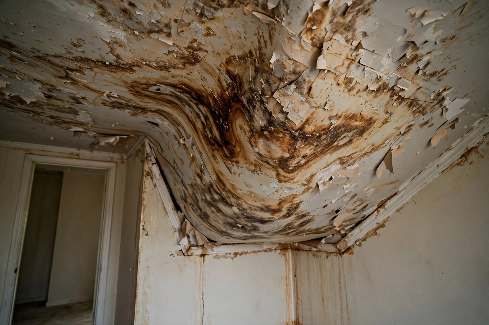
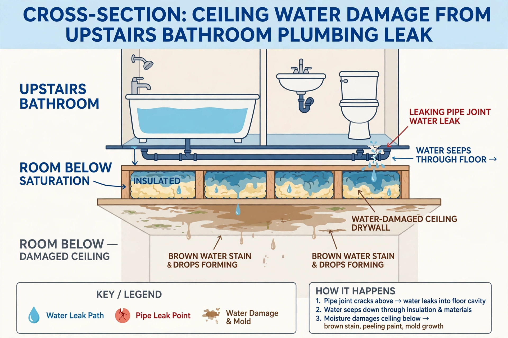

Ceiling Water Damage Repair in Boise, ID
A ceiling stain is the last thing to show up, not the first. By the time it’s visible, water has usually been sitting on top of the drywall for days. Finding the source — roof, bathroom, or a supply line in the floor above — comes before any patching.

What a ceiling tells you before it fails
Any one of these deserves a look. Two or more together usually means water is still getting in.
- A yellow-brown ring with a darker edgeEach dark outline is a separate wet-dry cycle — the leak is recurring, not a one-off.
- Paint bubbling or peeling in a blisterWater trapped between paint film and drywall paper. Don’t pop it over furniture.
- A soft, sagging belly in the drywallSaturated gypsum loses strength fast. Keep people out from underneath.
- Drips from a light fixture or smoke detectorWater follows wiring. Switch that circuit off at the panel before touching anything.
- Stain directly under a tub, toilet or showerPoints to a wax ring, drain gasket or failed grout rather than the roof.
- Stain only appears after snow or a hard rainPoints to roof flashing, a vent boot or an ice dam at the eaves.
How ceiling repair is usually handled
Trace the source
Moisture meter and thermal camera on the ceiling plane, then work backward to the roof deck, attic or the fixture above.
Stop the water
Shut the supply line, tarp the roof, or clear the condensate line — whatever the source needs before any drywall comes down.
Open & dry
Cut out wet drywall and wet insulation. Joists and the subfloor above are dried until readings return to normal.
Rebuild & match
New board, tape, texture match (knockdown or orange-peel is common locally) and stain-blocking primer before paint.
Drying targets follow the IICRC S500 water damage standard. If the stain is more than 48 hours old, a mold check is part of the job — see mold inspection.
A typical project looks like this

Two-story 1990s home in West Boise, stain below the hall bath
The homeowner notices a dinner-plate stain on the living-room ceiling that slowly grows over three weeks. There’s no roof above that spot — it sits under the upstairs shower.
- Plumber replaces the valve cartridge from the shower side.
- Ceiling below is cut open; wet batt insulation bagged out.
- Joist bay dried with air movers and a dehumidifier.
- Board replaced, knockdown texture matched, ceiling repainted.
Ceiling leak questions from Boise homeowners
Can I just paint over a water stain on my ceiling?
Only once the source is fixed and the drywall is completely dry. Regular paint lets the stain bleed back through within weeks — use an oil- or shellac-based stain blocker first. If the board is soft or sagging, it needs replacing, not painting.
Does homeowners insurance cover a leaking ceiling?
Most Idaho policies cover sudden and accidental water — a burst supply line, for example — but exclude slow leaks and worn roofing. Photograph the stain and the source before repairs and call your carrier early. The Idaho Dept. of Insurance publishes consumer guides on claims.
Should I poke a hole in a bulging ceiling?
If water is pooling and the ceiling is visibly bellied, a small hole at the lowest point with a bucket underneath can prevent a larger collapse. Turn off power to any fixtures in that area first, and stand to the side.
Why does my ceiling only leak in winter?
In the Treasure Valley that’s usually an ice dam: heat escaping into the attic melts roof snow, which refreezes at the cold eaves and backs water under the shingles. More attic insulation and ventilation is the long-term fix.
How long does a ceiling take to dry out?
With the wet drywall removed and drying equipment running, framing usually dries in two to five days. Left closed up, a wet ceiling cavity can stay damp for weeks, which is where mold starts.
Related services
Stain getting bigger?
Call now for a free inspection — open 24 hours.